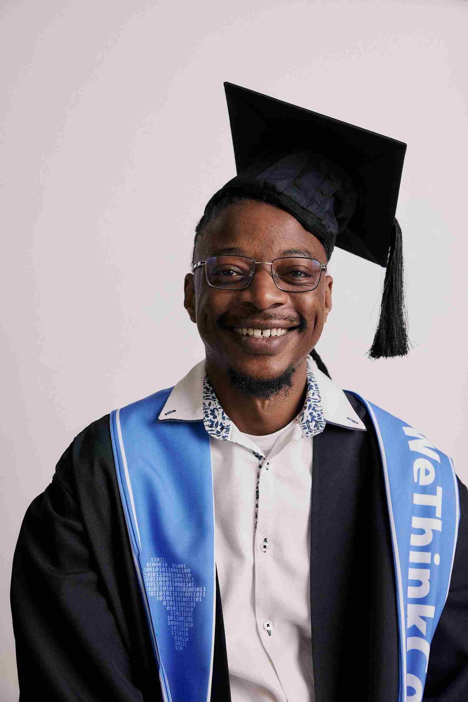

About Me
My name is Onesmus Maenzanise. I am a software engineer specializing in backend development. I graduated from WeThinkCode_ and have a strong passion for problem-solving, coding, and working on innovative projects. I am currently engaged and preparing for marriage. In my free time, I enjoy working on hackathons, building projects in Golang, and exploring AI integrations.
Cape Town, South Africa
I am originally from Zimbabwe but currently live in Cape Town, South Africa. Cape Town is known for its stunning landscapes, including Table Mountain, beautiful beaches, and rich cultural history. It is also a growing tech hub in Africa.